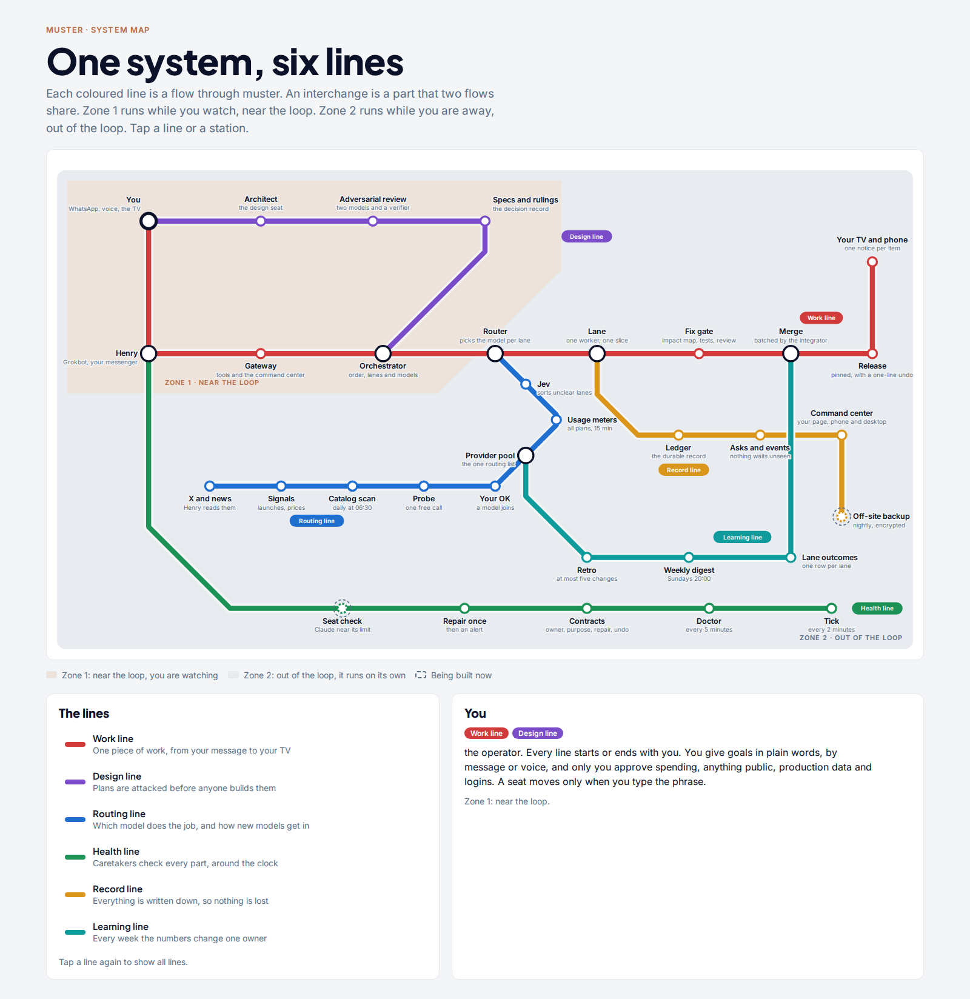
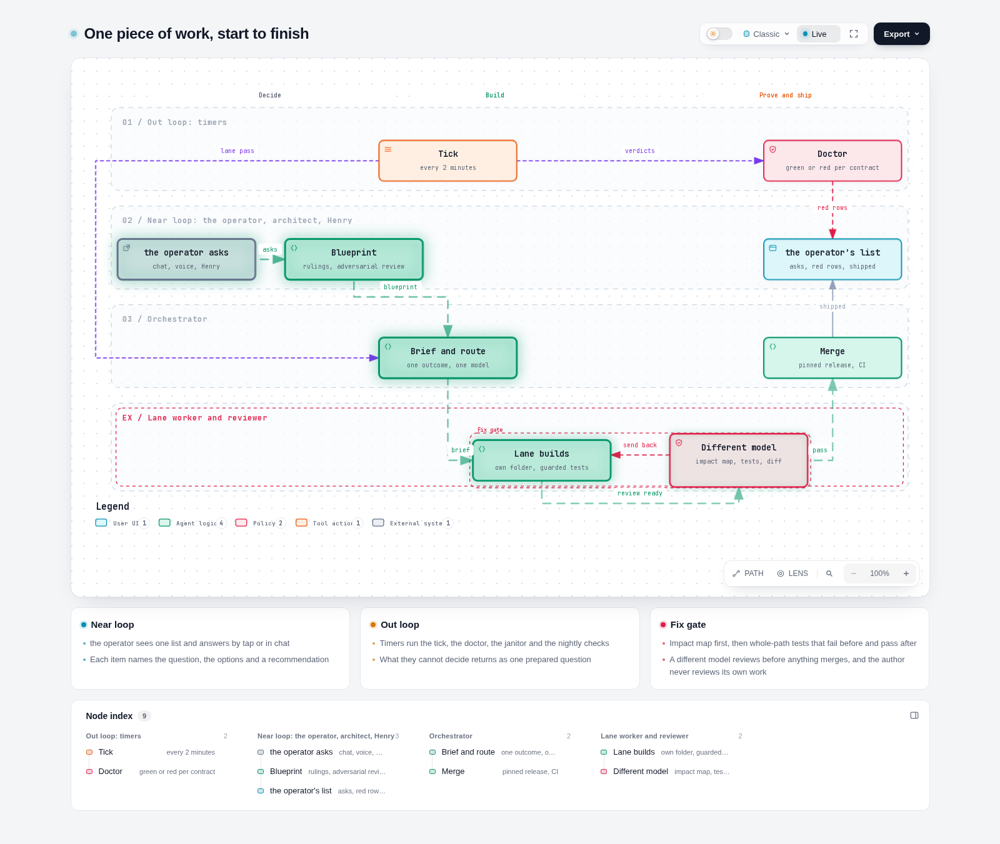
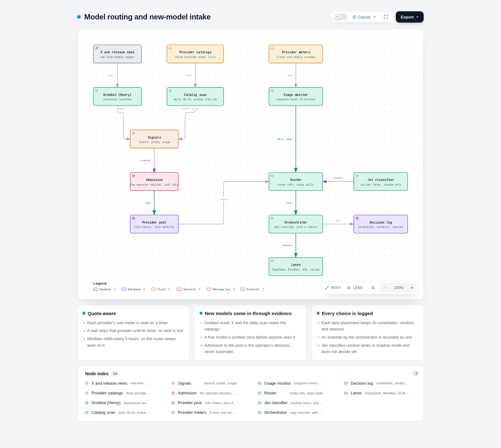
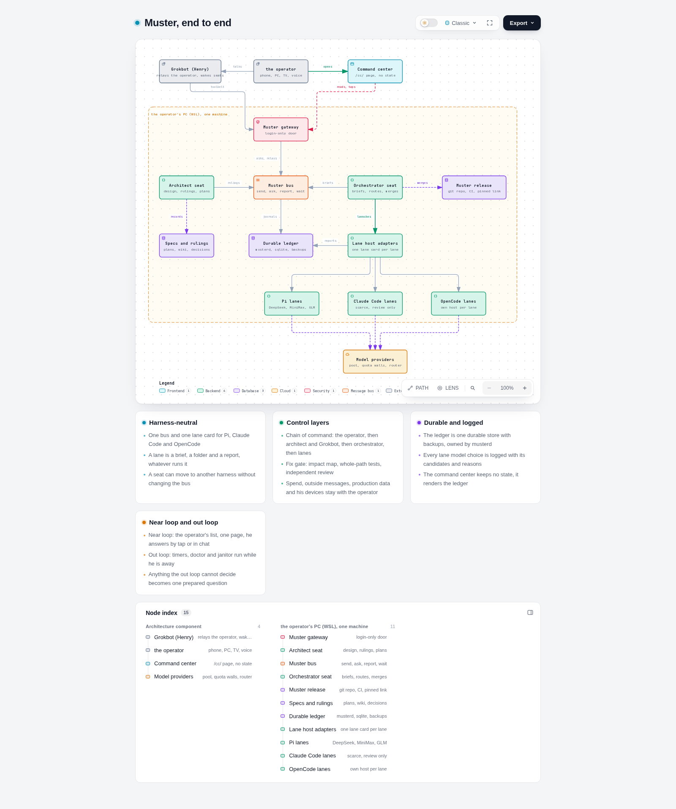

Open source · AI agent operations
An AI engineering team you run from your phone. Grokbot is the control layer. Claude Code, Pi and OpenCode agents on five model families design, build, review and ship, and every step is recorded.
The problem
Who it is for
Run several products at once with a team of agents that works while you are away.
Put AI agents behind the same process as people: briefs, review by another model, proof before merge.
Mix harnesses and vendors, route by cost and quota, and fail over when a provider walls.
Grokbot: the control layer
The human gives goals and answers to Grokbot on the phone. Grokbot relays the exact words to the architect and orchestrator seats and wakes them.
Grokbot reads lanes, asks, goals and releases through the Muster gateway: about 60 typed tools, bearer roles, an audit log, and no shell tool.
Every question reaches the human prepared, with options and a recommendation. One tap answers it and the queue closes it with evidence.
Grokbot reads X for model launches, prices and terms. Signals land in the research desk, and a free model that passes a probe is offered with one tap.
Grok is reserved to review risky fixes: a different model family from the author checks the impact map and the tests before merge.
Spending, messages to real people and production data go out only on the human's own tap. Grokbot prepares, the human decides.
How it works

The pieces
send, ask, report, wait. A daemon on a local socket with SQLite storage and a spool for restarts.
The architect turns goals into reviewed blueprints. The orchestrator writes briefs, routes, verifies and merges.
One worker, one written brief, its own folder. Fast, cheap models by default.
Role chains per lane class, quota meters per provider, wall detection, fallbacks, and a logged reason for every placement.
One live page for phone, desktop and TV: goals, lanes with their model, what needs you, what shipped today.
No model needed: a tick every 2 minutes, a doctor that turns each broken contract red, a janitor.
From a phone message to a merged release

Cheapest model that fits, skipping quota walls

Architecture

Proof, not a prototype
Every fix passes a gate: an impact map, a test that fails before the fix, and a review on another model family. A status is shown only with its proof.
What we learned
Next
Grokbot becomes the team's home, not only its messenger.
Try it
Message Grokbot. The team builds, reviews and ships. You decide what matters.
scripts/setup.sh muster lanes muster route pick --lane demo --task-kind research muster seat show orchestrator